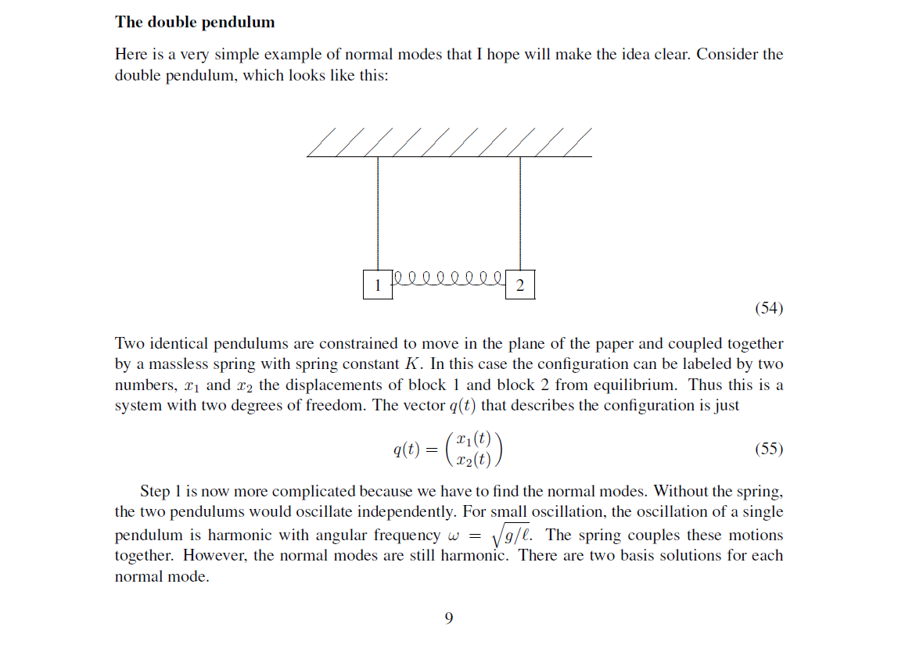

After seeing the example of the Disney Animatronics lab and the software they use to reverse engineer certain pathways into linkages designs, I was reminded of a brutally time consuming problem set question from Howard Georgi's Physics 15a course I took sophomore year.

The final deliverable of the problem set was to generate a simulation of the motion
of the pendulum with variable point masses and comparying simulations
given different initial potential energy and begining inertia. Similar to:
Eventually we all realized that one of the main takeaways was to show us how unpredictable to motion is and how dificult it can be to simulate it. But I remember thinking how peculiar it was that such a seemingly simple mechanism could deviate into such erratic behavior so quickly.